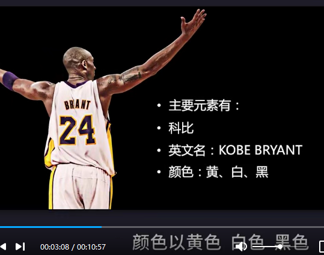
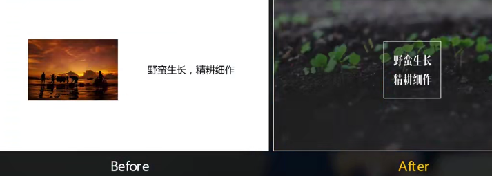
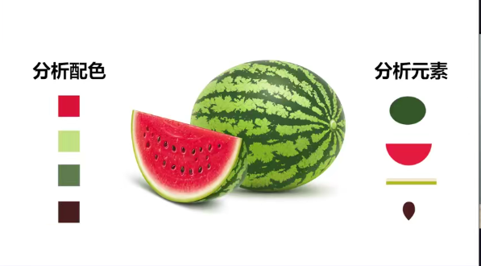
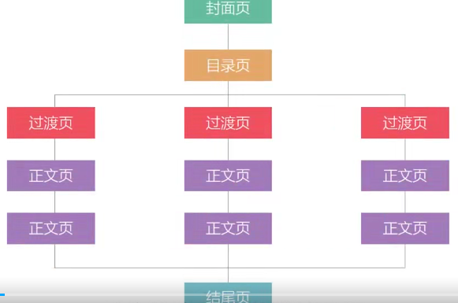
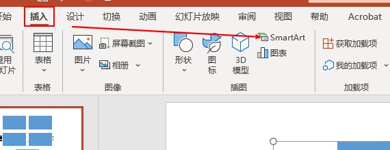
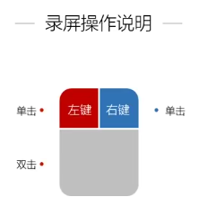
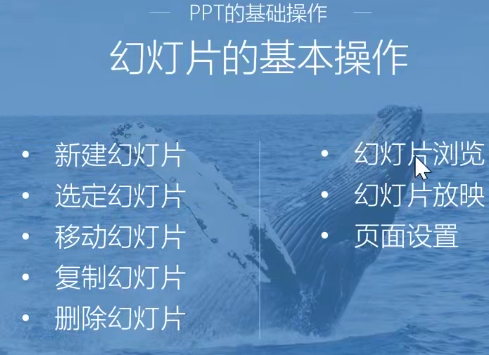

理念与操作篇
001为什么说PPT是职场人必须技能
实战 趣味 风骚的课程。80%按钮都不会用的。
一天拨打100个3分钟以上有效电话。
七大篇章
- 理念与操作篇
- 必学功能篇
- 格调提升篇
- 使用场景化
- 疑难杂症与心得分享
- 从策划的角度构思PPT
思考->策划->设计->演绎->商务PPT
人性。。。策划的思维
微软PPT2016版本。
ppt的后缀名字是.ppt或者.pptx
演示文件叫做ppt
金句为之助力。
002 我们为什么都做不好PPT
1、做PPT需要审美
抠图功能。

分析素材的颜色元素。
对于句子情景的想象场景。
四个层次：艳俗 矫情 含蓄 病态（美的最高境界)


工具和操作。
四个对美的关键：
多看 多想 多仿 多讲
类型：阅读型(企业介绍等) 演讲型（商务汇报 演讲课件)
时间是最伟大的魔术师。
003常用幻灯片软件对比
壁画 演讲 漫画 投影仪 1987年ppt诞生了。
keynote 简单不少，流畅很多
Prezi一张大的图，更具有连续的画面
PowerPoint微软
wps国产金山软件 体积小
004 PPT是编剧、设计师、演员三个角色的统一
抓住小朋友的心，做一个好好的编剧。匠心
八大要素：
思
明确目标
观点是否清晰
如何打动人
简
真
美
惊
气
微笑是演讲过程中，必不可少的武器。
- 叹
- 省
你站久了，舞台就是你的了！
005PPT制作四大误区与优秀标准
第一个误区：ppt的word话
误区2：逻辑层面的混沌不清（金字塔原理)
误区3：沟通层面（自我为中心）
用大白话说明你的观点。
误区4：技术层面上的粗制乱造
006 正确制作PPT的顺序
先搭框架 再写文页

①明确主题意图
②分析听众（思维导图)
③动手制作
确认幻灯片尺寸
精简PPT文字稿
确定风格
设计风格 演说风格
④寻找素材
⑤制作幻灯片demo
⑥沟通交流修改幻灯片
⑦检查和定稿
007 快速掌握PPT基础
SmartArt：

格式刷的使用：
形状透明度蒙版的使用：
幻灯片母版：
切换与基本动画：
动画刷的使用：
008 素材类操作让PPT骨肉丰满
取色器的使用：
编辑顶点：
ctrl+shift复制更快
ctrl+alt
布尔运算：格式 合并形状里面 形状的裁剪
演示者视图：右键
PPT分节设置
009 PPT特色新功能开启全新世界


插入类对象：
插入文字
插入形状
图标和表格
插入音乐和视频
快速对齐
增加撤销次数 文件 选项 高级 最多可取消次数
更改界面颜色
自定义快速工具栏
文字和形状的区别
保存设置
缩略图选项
010巩固与实操 做出这份PPT
将word文档，提炼套用模板！